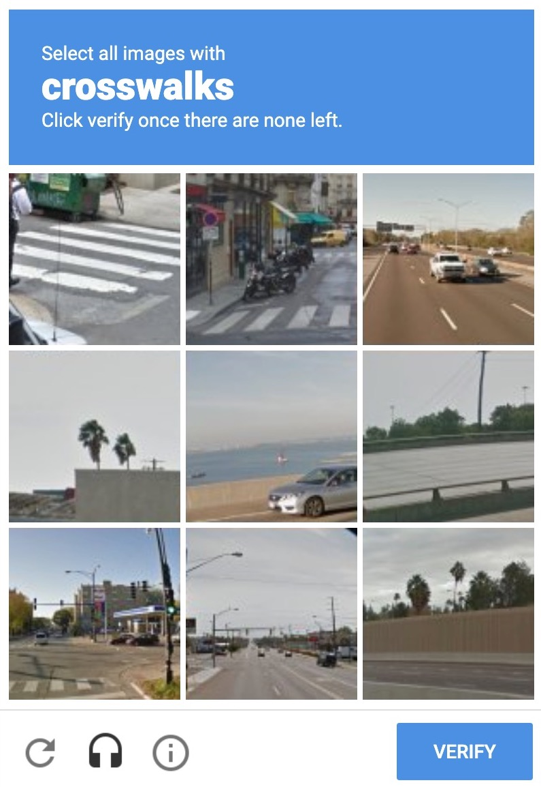
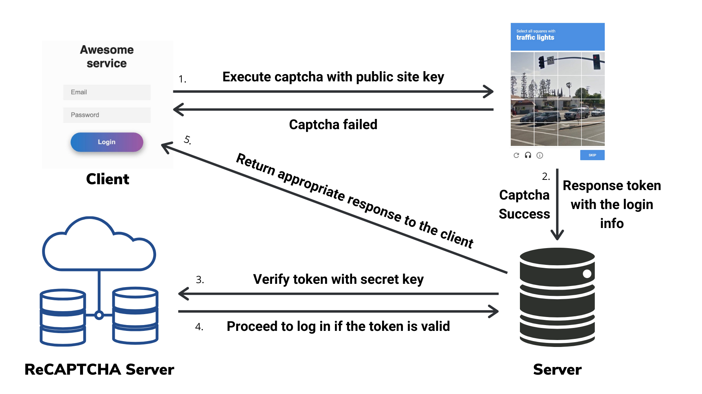
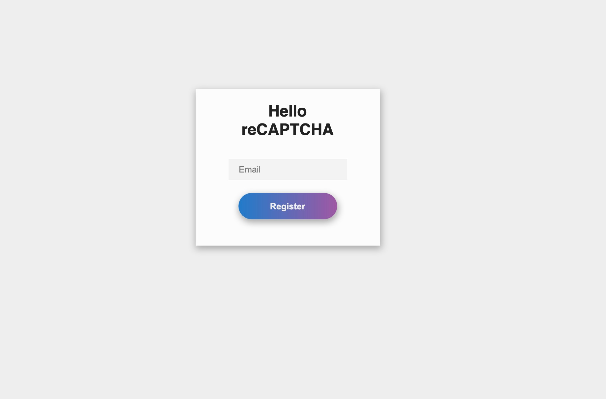
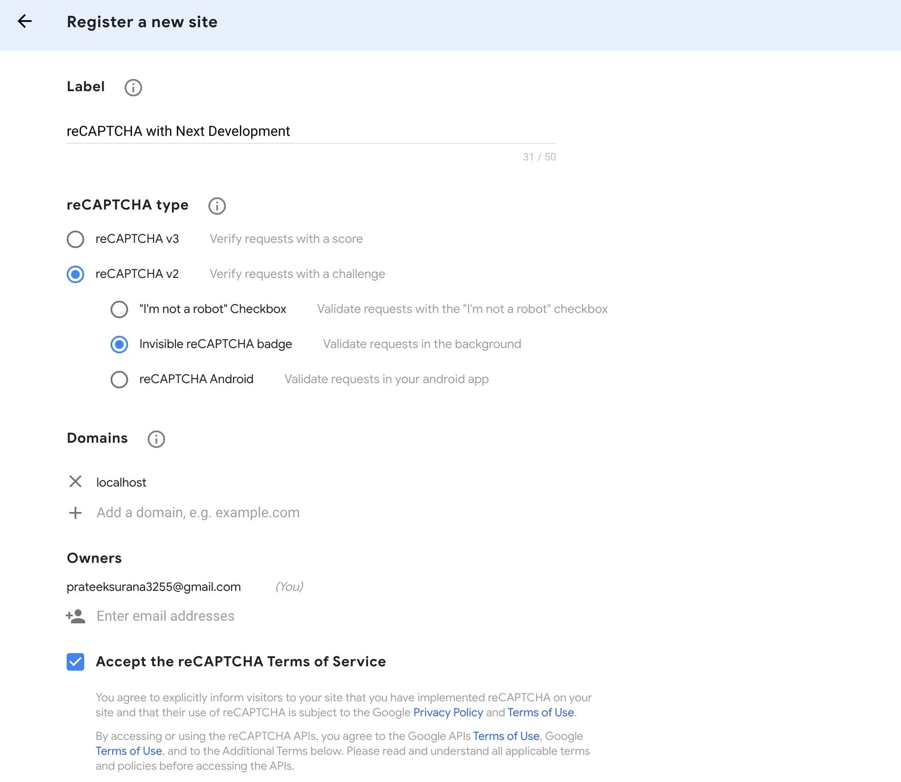
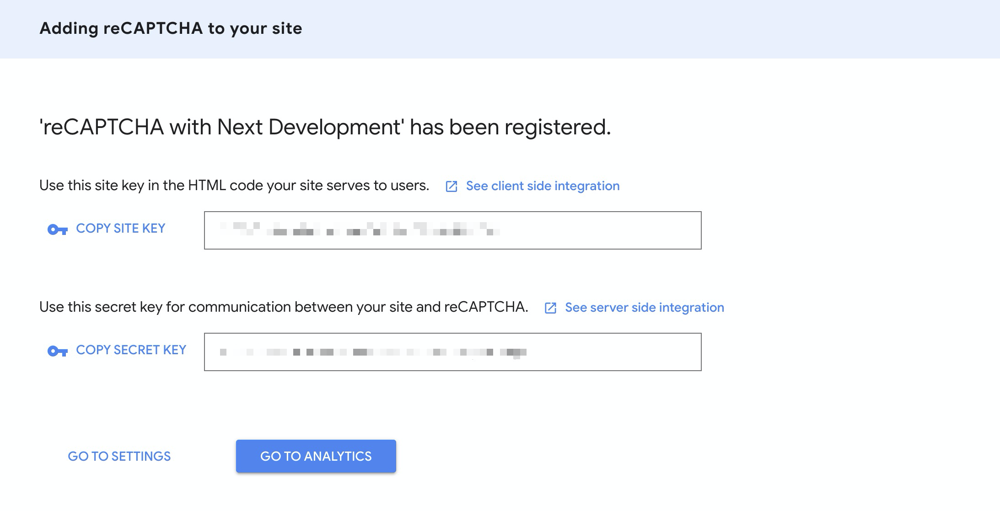
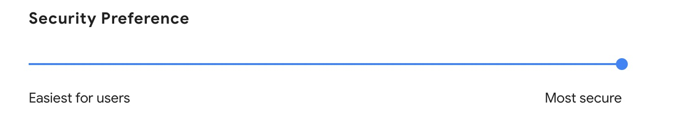
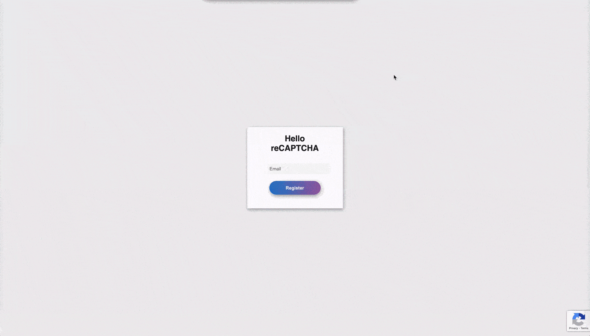
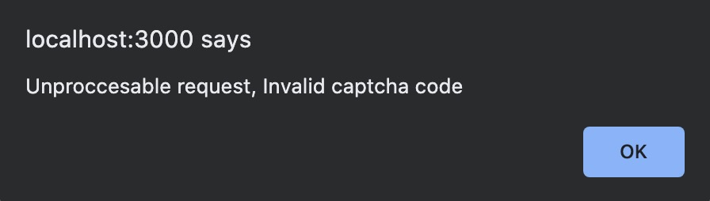
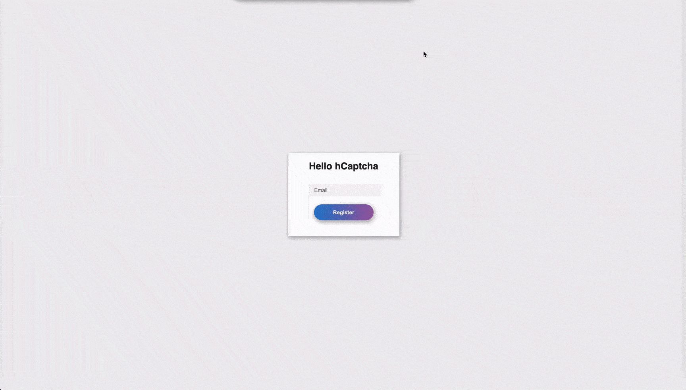

In this post on integrating reCAPTCHA with Next.js, we will be looking at what is a CAPTCHA, how does it work and why you might need it. Then we'll work on a demo to illustrate how you can take advantage of Next.js features to integrate it nicely with your website.
So you must've probably seen this before, but have you ever wondered what it does?

A CAPTCHA is a Turing test designed to tell humans and bots apart and is generally used by websites to prevent spam and abuse. It uses a challenge that is easy for humans but hard for bots.
reCAPTCHA is a CAPTCHA system currently being maintained by Google. The currently maintained versions are v2, which uses an analysis of cookies, canvas rendering, and user behavior to decide whether to show a challenge or not, and v3, which does not interrupt the users at all.
To get the full benefits of reCAPTCHA, you need to verify the captcha response code in the server to verify its validity. With Next.js, this could have never been easier since it easily lets you spin up a serverless function (if you're deploying it via Vercel) just by adding an API route in the /pages/api/ folder.
This post assumes you are familiar with the basics of React and Next.js. If not, I would recommend checking out the Intro to React Tutorial by the React team and the Next.js tutorial from the docs.
reCAPTCHA, though more famous than any other solutions out there but is infamous for its privacy-related concerns. So if you are concerned about your user's privacy, we will also be looking at a privacy-friendly alternative to reCAPTCHA called hCaptcha later in this post.
We will cover this with the following steps -
- Why you might need to use reCAPTCHA and how does it work
- Setting up the project
- Adding reCAPTCHA to the frontend
- Verifying captcha via Next.js' API routes
- Bonus: Integrating hCaptcha and why you might need it
Why you need to use reCAPTCHA and how does it work
Before we dive into integrating reCAPTCHA, let's take a moment to understand why you need it and how does it solve your problems.
If you have a public-facing page with a form that sends the data to your backend server, then adding reCAPTCHA can help you to prevent spammers/bots from flooding your form and thus polluting your database or prevent something like brute force password guessing attack on a login page. Although reCAPTCHA is not the only way to prevent such malicious requests, there are other ways you can prevent spam without disturbing your users. Still, reCAPTCHA is really smart and only shows a challenge if your user fails its cookie and behavior analysis.
The way it works is as soon as the user submits the form, you execute the reCAPTCHA instead of sending the data directly to your backend. In turn, reCAPTCHA provides you a callback for both success and failure, which will be executed if the user passes or fails the reCAPTCHA, respectively.
Now this will prevent your frontend from malicious attacks. However, your backend APIs might still be insecure (assuming you are not using any other kind of protection, e.g., CSRF tokens) because anyone can open the network tab to check the APIs getting pinged and run a script to ping the API with spam data. Thankfully reCAPTCHA provides a solution for that as well. When a user successfully clears the reCAPTCHA, you are provided with a token that is valid for 2 minutes. You can now validate this token in your backend with a secret key to verify the request's authenticity.

Setting up the project
I will be using a plain starter built using create-next-app with a simple form. If you want to follow along, you can get the initial state from this commit. The initial setup looks like this, and it just shows your email in an alert when you click on register

Let's register a new project on reCAPTCHA and get the required keys. For that, you can go to the reCAPTCHA admin console, fill in the required details as mentioned below, and click on submit.
For this post's scope, we will be focusing on the v2 Invisible reCAPTCHA which does not involves the reCAPTCHA checkbox. It invokes the prompt to solve captcha for most suspicious traffic via a JavaScript API call and will directly tell us if the user has passed or not.
v3 reCAPTCHA, though, is more advanced and doesn't require users to solve any challenge, but only provides a score between 0 and 1, requiring you to take action in the context of your site: for instance, requiring additional factors of authentication, sending a post to moderation, or throttling bots that may be scraping content.

Notice how I added the only localhost to the list of domains. That's because we would only be using these keys for development purposes. reCAPTCHA also does a domain validation for the site it is being executed on, so we would be creating a separate set of keys for the production environment to only be used on the production domain and not be misused.
After clicking submit, you should be able to see the public and secret keys.

To have separate keys for production and development environments and avoid pushing these keys to version control, we would store these keys in the environment variables. Unlike typical react app setups where you would need to manually setup environment variables manually via Webpack plugins, Next.js comes with built-in support for environment variables. For the development environment, create a file called .env.local and add the following to it, and paste the keys you copied from the reCAPTCHA dashboard here appropriately.
# Add the public site key here
NEXT_PUBLIC_RECAPTCHA_SITE_KEY=
# Add the secret key here
RECAPTCHA_SECRET_KEY=You can use different environment keys for production with the proper domains added, either using .env.production.local or adding the production environment variables to the tool (e.g., Vercel) you are using to deploy your app.
Adding reCAPTCHA to the frontend
We need the public site key to be available to the client. Adding the NEXT_PUBLIC_ suffix to the environment variable would make it visible to the browser. The RECAPTCHA_SECRET_KEY environment variable would only be available on the server.
We would be using a library called react-google-recaptcha, a wrapper around reCAPTCHA v2 that provides access to its APIs via a React component. Let's install it -
yarn add react-google-recaptchaSince we are using the v2 invisible reCAPTCHA, we would be executing it when we submit the form via a React ref. Import the ReCAPTCHA component and place it in the pages/index.js file, like this -
import React from "react";
import Head from "next/head";
import ReCAPTCHA from "react-google-recaptcha";
export default function Home() {
const [email, setEmail] = React.useState("");
const recaptchaRef = React.createRef();
.
.
.
.
<form onSubmit={handleSubmit}>
<ReCAPTCHA
ref={recaptchaRef}
size="invisible"
sitekey={process.env.NEXT_PUBLIC_RECAPTCHA_SITE_KEY}
onChange={onReCAPTCHAChange}
/>
<input
onChange={handleChange}
required
type="email"
name="email"
placeholder="Email"
/>
<button type="submit">Register</button>
</form>
.
.
);
}For the siteKey we are using the environment variable that we created in the last step.
We now need to execute the reCAPTCHA when submitting the form and do what we want when our form is submitted in the ReCAPTCHA component's onChange handler when the captcha is completed. So let's modify the handleSubmit function and define the onReCAPTCHAChange function accordingly in our component -
const handleSubmit = (event) => {
event.preventDefault();
// Execute the reCAPTCHA when the form is submitted
recaptchaRef.current.execute();
};
const onReCAPTCHAChange = (captchaCode) => {
// If the reCAPTCHA code is null or undefined indicating that
// the reCAPTCHA was expired then return early
if(!captchaCode) {
return;
}
// Else reCAPTCHA was executed successfully so proceed with the
// alert
alert(`Hey, ${email}`);
// Reset the reCAPTCHA so that it can be executed again if user
// submits another email.
recaptchaRef.current.reset();
}When you restart the server with yarn dev, if the integration was successful you should see the reCAPTCHA badge at the bottom right corner. And you would be only able to see the alert if you pass the reCAPTCHA.
Note that if a challenge is not being shown to you, it doesn't necessarily mean that there is something wrong with the integration. As I mentioned earlier, reCAPTCHA only shows a challenge if you fail its behavior or cookie analysis. If you still want to see the challenge anyways, you can open the tab in incognito and update the security preference to most secure from the reCAPTCHA admin dashboard.

You should be able to see the challenge after submitting a form couple of times in a row.

Verifying captcha via Next.js' API routes
Likely, you don't want to show your user's info in an alert box when he submits your form. You might want to store that info somewhere in your backend instead or provide an appropriate response to the user in case of a login form. For that, we can replace the code that shows the alert with an API call that saves the info the user entered to your backend because we have already added the reCAPTCHA that would prevent any bot or spammers, right?
Well, not really. As I mentioned in the beginning if you're not using any protection for your API and since the API is most probably open, someone can still run a simple script that continuously pings your API with garbage data polluting your database.
Don't worry Next.js and reCAPTCHA have you covered.
Remember the reCAPTCHA token you received in the onReCAPTCHAChange function. That token can be used to verify whether the request you just received is legitimate or not. Google provides an API for verifying that token in your server via the secret key. The token is valid only for 2 minutes and can only be verified once to prevent any replay attacks.
So do you need to update your API route that saves the user details or create a new server that would handle the verification if you're relying on some third party API?
This is where Next.js' API routes come in. If you're using Vercel for deployment, it spins up a serverless function whenever you create a new API route.
For our demo, we need an API endpoint that accepts the email and the captcha token and saves the email to the database if the token is valid, and returns an error if it is bogus.
Let's create our API route, create a file called pages/api/register.js and paste the following in it -
// pages/api/register.js
import fetch from "node-fetch";
const sleep = () => new Promise((resolve) => {
setTimeout(() => {
resolve();
}, 350);
});
export default async function handler(req, res) {
const { body, method } = req;
// Extract the email and captcha code from the request body
const { email, captcha } = body;
if (method === "POST") {
// If email or captcha are missing return an error
if (!email || !captcha) {
return res.status(422).json({
message: "Unproccesable request, please provide the required fields",
});
}
try {
// Ping the google recaptcha verify API to verify the captcha code you received
const response = await fetch(
`https://www.google.com/recaptcha/api/siteverify?secret=${process.env.RECAPTCHA_SECRET_KEY}&response=${captcha}`,
{
headers: {
"Content-Type": "application/x-www-form-urlencoded; charset=utf-8",
},
method: "POST",
}
);
const captchaValidation = await response.json();
/**
* The structure of response from the veirfy API is
* {
* "success": true|false,
* "challenge_ts": timestamp, // timestamp of the challenge load (ISO format yyyy-MM-dd'T'HH:mm:ssZZ)
* "hostname": string, // the hostname of the site where the reCAPTCHA was solved
* "error-codes": [...] // optional
}
*/
if (captchaValidation.success) {
// Replace this with the API that will save the data received
// to your backend
await sleep();
// Return 200 if everything is successful
return res.status(200).send("OK");
}
return res.status(422).json({
message: "Unproccesable request, Invalid captcha code",
});
} catch (error) {
console.log(error);
return res.status(422).json({ message: "Something went wrong" });
}
}
// Return 404 if someone pings the API with a method other than
// POST
return res.status(404).send("Not found");
}For simplicity, I have installed a package called node-fetch, which is a light-weight wrapper that provides the window.fetch like API in Node environment.
Now let's integrate this API on the client. Update the onReCAPTCHAChange function in the pages/index.js with the following snippet -
const onReCAPTCHAChange = async (captchaCode) => {
// If the reCAPTCHA code is null or undefined indicating that
// the reCAPTCHA was expired then return early
if (!captchaCode) {
return;
}
try {
const response = await fetch("/api/register", {
method: "POST",
body: JSON.stringify({ email, captcha: captchaCode }),
headers: {
"Content-Type": "application/json",
},
});
if (response.ok) {
// If the response is ok than show the success alert
alert("Email registered successfully");
} else {
// Else throw an error with the message returned
// from the API
const error = await response.json();
throw new Error(error.message)
}
} catch (error) {
alert(error?.message || "Something went wrong");
} finally {
// Reset the reCAPTCHA when the request has failed or succeeeded
// so that it can be executed again if user submits another email.
recaptchaRef.current.reset();
setEmail("");
}
};To test if the integration is proper, you can replace the captcha code sent to the API with a random string, and you should see this when you click on register.

If you followed along till here, then pat yourself on the back. Your frontend and backend database are now fully secure from any spam or bots.
Bonus: Integrating hCAPTCHA and why you might need it
Although reCAPTCHA might be great for security, but if you're concerned about your user's privacy, then hCaptcha might be a better choice. Do checkout why Cloudflare moved from reCAPTCHA to hCaptcha. hCaptcha differs from reCAPTCHA in the following ways:
- They respect for your user's privacy.
- Your visitors will solve problems that benefits many companies for labelling the data instead of a single corporation.
- It's more user friendly and contains a variety of challenges.
Thanks to hCaptcha's clean and similar to reCAPTCHA APIs, it takes no time to switch from reCAPTCHA to hCaptcha. It literally took me just 15 minutes to go through their docs and replace reCAPTCHA with hCaptcha for our demo.
The setting up process is very similar to reCAPTCHA. You can go to their signup page to create an account and get the site key and secret key for your site. I renamed the keys to NEXT_PUBLIC_HCAPTCHA_SITE_KEY and HCAPTCHA_SECRET_KEY, respectively, in the .env.local file.
They also have a React wrapper component called @hcaptcha/react-hcaptcha, which also has a very similar API to the React component we used for reCAPTCHA. These are the only changes (apart from renaming reCAPTCHA variables) I had to integrate the component on the client in pages/index.js :
.
.
import HCaptcha from "@hcaptcha/react-hcaptcha";
.
.
.
<HCaptcha
id="test"
size="invisible"
ref={hcaptchaRef}
sitekey={process.env.NEXT_PUBLIC_HCAPTCHA_SITE_KEY}
onVerify={onHCaptchaChange}
/>For the api route, we just need to change the url and pass the secret and token to the body instead of query params, this is what it looks like in pages/api/register.js :
const response = await fetch(
`https://hcaptcha.com/siteverify`,
{
headers: {
"Content-Type": "application/x-www-form-urlencoded; charset=utf-8",
},
body: `response=${captcha}&secret=${process.env.HCAPTCHA_SECRET_KEY}`,
method: "POST",
}
);Although hCaptcha doesn't work on localhost URLs so you would need to add a host entry for localhost according to your system for it to work.
After that you can just run yarn dev, and visit the URL you added the host entry for localhost to to see hCaptcha in action

I created a separate branch in the demo repo, for the hCaptcha integration here -
I hope this article helped you in gaining some insight on how you can integrate CAPTCHA with your Next.js website and which CAPTCHA service you should prefer. If it did then do share it on twitter and follow me for more.
You can find the full code for both the reCAPTCHA and hCaptcha integration on GitHub.